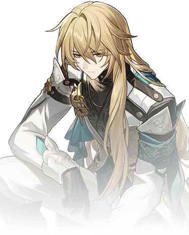

Descripcion del personaje
En la historia de Honkai: Star Rail, Luocha es un personaje intrigante con un trasfondo misterioso. Es conocido como un viajero y comerciante ambulante que recorre el universo en busca de experiencias y oportunidades, lo que le permite interactuar con una variedad de personajes y situaciones
Luocha es reconocido por sus habilidades de sanación y cuidado. A menudo se presenta como un médico capaz de curar heridas y enfermedades, lo que lo convierte en un aliado valioso en las aventuras del grupo. Su conocimiento de la medicina es profundo, y utiliza su experiencia para ayudar a los demás.
Aunque Luocha es un personaje amigable y accesible, su pasado y motivaciones están envueltos en misterio. Esto genera curiosidad en los jugadores, ya que a medida que avanza la historia, se van revelando más detalles sobre su historia personal y su relación con otros personajes clave.
Introduccion al personaje
Luocha es un personaje sanador de tipo Imaginario en Honkai: Star Rail, conocido por su capacidad para curar a sus aliados y mejorar su rendimiento en combate. Aunque no puede revivir a los caídos, su habilidad para restaurar salud lo convierte en un activo esencial para cualquier equipo en el juego.Su rol como sanador de tipo Imaginario lo convierte en un aliado valioso, especialmente en equipos que enfrentan enemigos con debilidades a este tipo.

Calidad del personaje

VIA del personaje
Abundancia

Estadisticas del personaje
- PV: 1280
- ATQ: 756
- DEF: 363
- VEL: 101
- Provocacion: 100